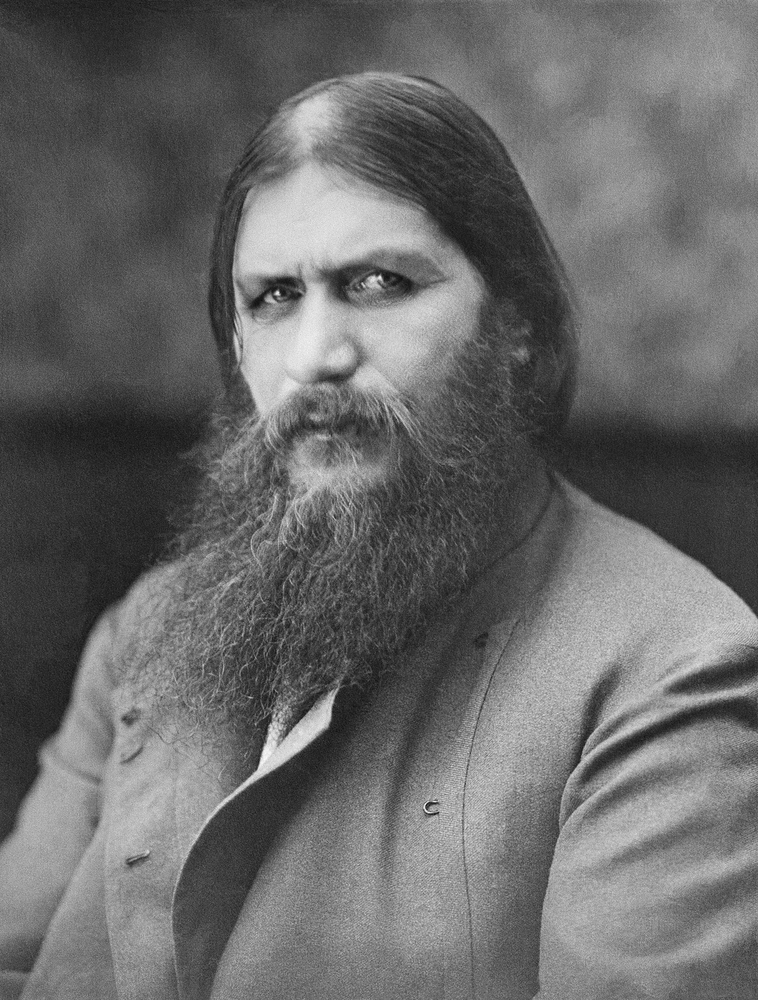

Grigori Rasputin
Russian mystic and self-proclaimed holy man who befriended the family of Nicholas II, the last emperor of Russia

Rasputin was murdered during the early morning on 30 December [O.S. 17 December] 1916 at the home of Felix Yusupov.
Further Information Here
- He was born a peasant.
- His early years are something of a black hole.
- He had a wife and seven children.
- It is unlikely he had mystical healing powers.
- It is unlikely he had mystical healing powers.
"When I go to confession I don’t offer God small sins, petty squabbles, jealousies… I offer him sins worth forgiving." - Grigori Rasputin